INFA 監控後台 設計規格
給開發工程師的交付文件：畫面、流程、權限規則、資料結構與 API。搭配可操作原型一起看，原型的行為就是預期行為。
1. 概述
INFA 監控後台是基礎架構各監控系統（Cacti、Zabbix、PRTG、Graylog…）的統一入口。使用者登入後，依區域看到自己有權限的子項目，點擊即另開分頁進入該系統。管理員可以建立帳號、設定每個帳號能看到哪些子項目。
角色
- 管理員 admin：看得到全部子項目；右上角有「權限設置」，可管理帳號與子項目。
- 一般使用者 user：只看得到被勾選的子項目，沒有權限設置入口。
六個區域（固定）
TWIDC · JPIDC · PHIDC · PH Office · PH Studio · SL Office
TWIDC 12 項、JPIDC 4 項已確定；其餘四區子項目待需求方提供。
初始子項目
| 區域 | Location | Name |
|---|---|---|
| TWIDC | TW | Cacti, Zabbix, WAN PRTG, LAN PRTG, Ext PRTG, Graylog, Graylog2, Looking glass, Streaming wall, haproxystat, NTOP, Wazuh |
| JPIDC | JP | Cacti, Zabbix, PRTG, Graylog |
| PHIDC / PH Office / PH Studio / SL Office | — | 待提供 |
2. 畫面
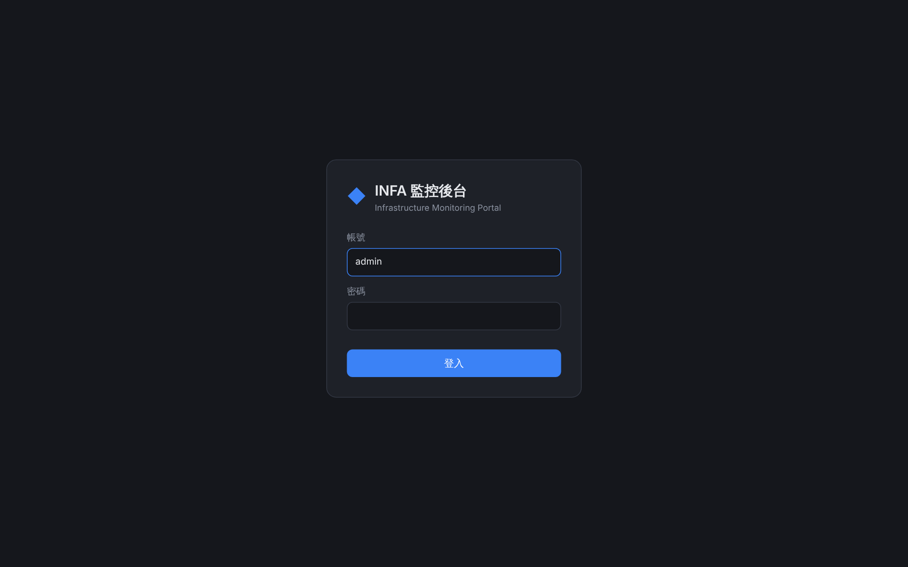
- 欄位：帳號、密碼；按 Enter 或「登入」送出。
- 帳號不分大小寫，密碼區分大小寫。
- 登入成功直接進主畫面；已登入時開網站直接進主畫面。
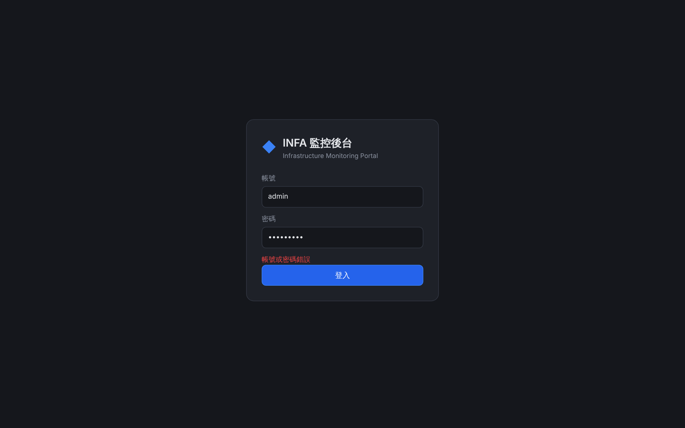
- 帳號不存在與密碼錯誤都顯示同一句「帳號或密碼錯誤」，不可透露帳號是否存在。
- 同一 IP 15 分鐘內失敗 10 次：「登入失敗次數過多，請稍後再試」。
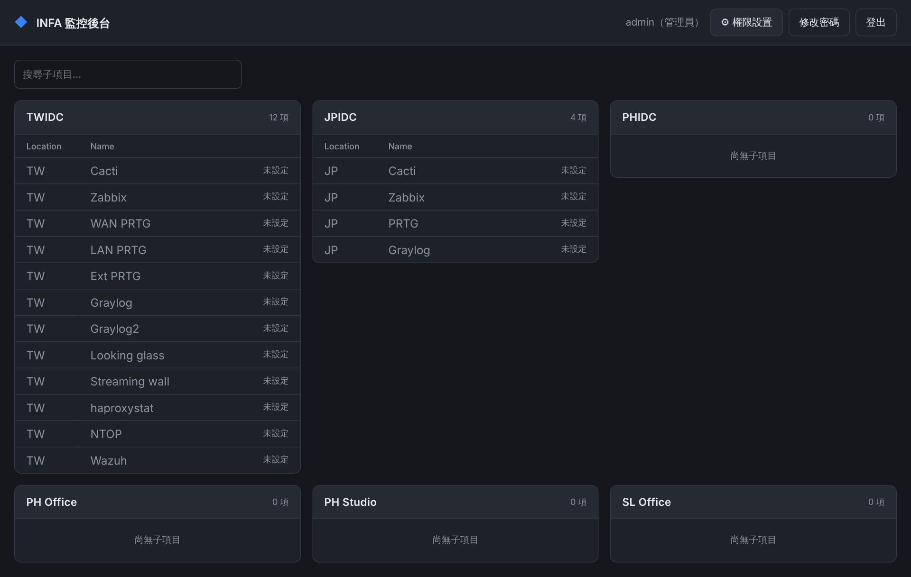
- 每張卡片：區域名稱 + 項目數，表格欄位 Location / Name。
- 點 Name 以新分頁開啟該子項目網址（
target="_blank" rel="noopener noreferrer"）。 - 尚未設定網址的項目顯示灰字與「未設定」，不可點擊。
- 管理員看得到全部六區，沒有子項目的區域顯示「尚無子項目」。
- 卡片以網格排列，寬度不足時自動換行（最小 300px）。
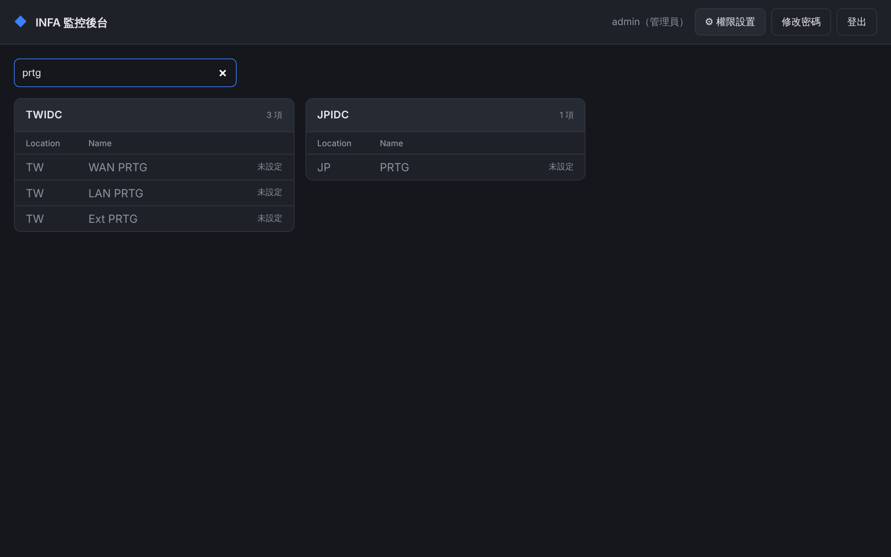
- 沒有符合項目的區域整張卡片隱藏。
- 全部沒有符合時顯示「找不到符合的子項目」。
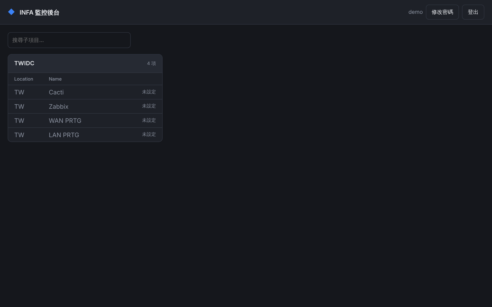
- 沒有任何授權項目的區域整張隱藏。
- 沒有「權限設置」按鈕。
- 完全沒有授權時顯示「目前沒有可檢視的子項目，請聯絡管理員開通權限」。
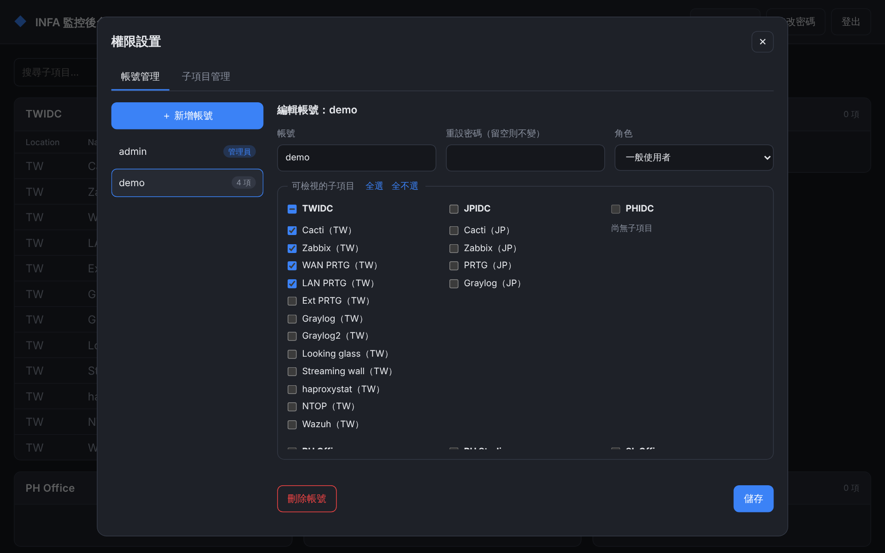
- 帳號清單：帳號名稱 + 標籤（管理員顯示「管理員」，一般使用者顯示已授權項目數）。
- 帳號名稱建立後不可修改（唯讀）。
- 「重設密碼」留空表示不變更。
- 可檢視的子項目：依區域分組的勾選清單。每組標題有群組勾選框（全選／部分選取顯示 indeterminate／全不選）；右上角「全選」「全不選」作用於全部。
- 「刪除帳號」：不能刪除自己（按鈕不顯示）。
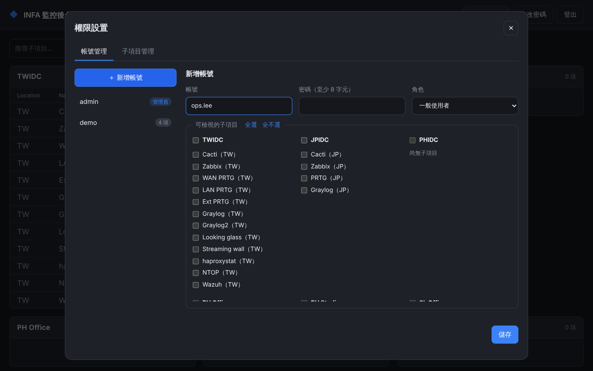
- 必填：帳號、密碼（至少 8 字元）。
- 角色預設「一般使用者」。
- 儲存成功跳出「帳號已儲存」提示，並選取該帳號。
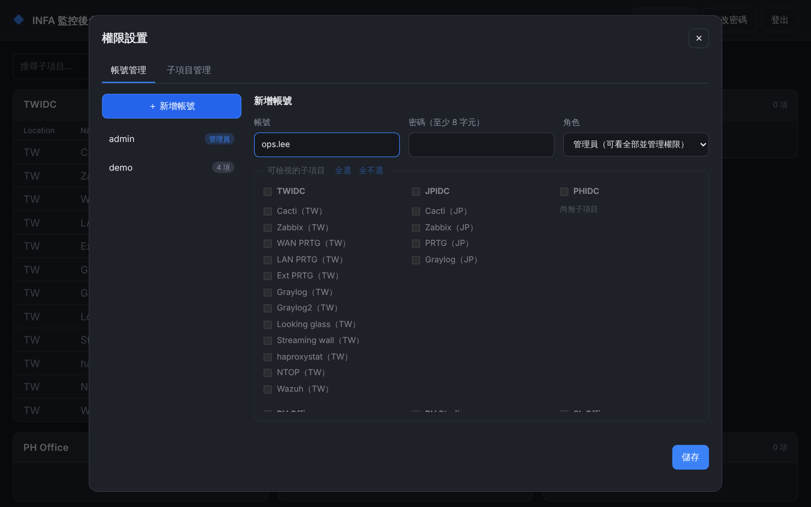
- 勾選值仍保留；改回一般使用者後恢復原本勾選。
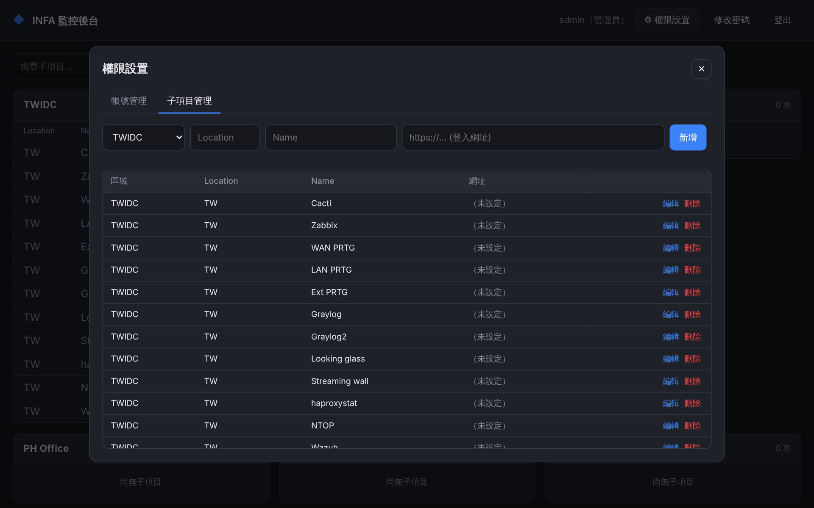
- 欄位：區域（下拉，六選一）、Location、Name（必填）、網址。
- 表格依區域順序、再依建立順序排列；網址過長以省略號截斷，滑過顯示完整網址。
- 新的四個區域的子項目就是從這裡新增，不需要改程式。
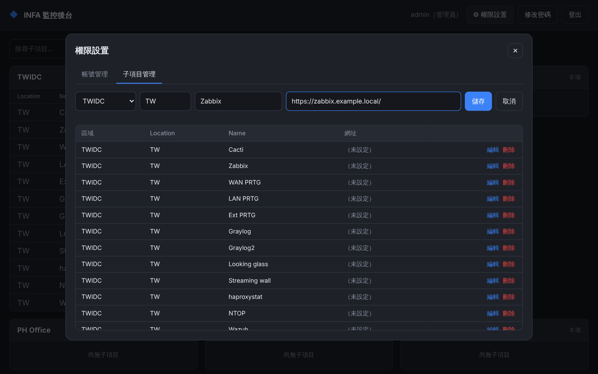
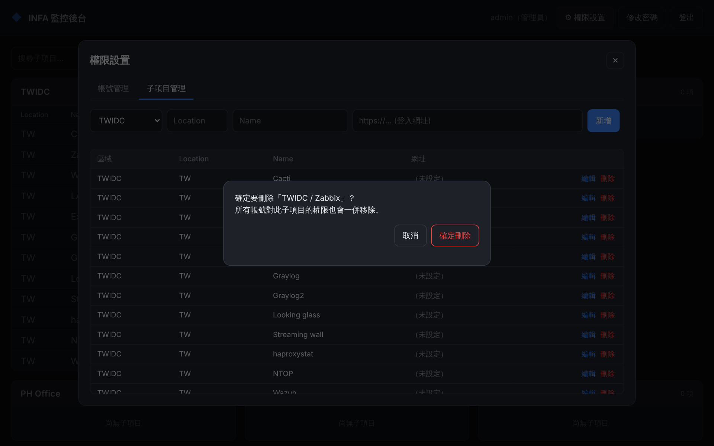
- 刪除子項目時，所有帳號對它的授權一併移除。
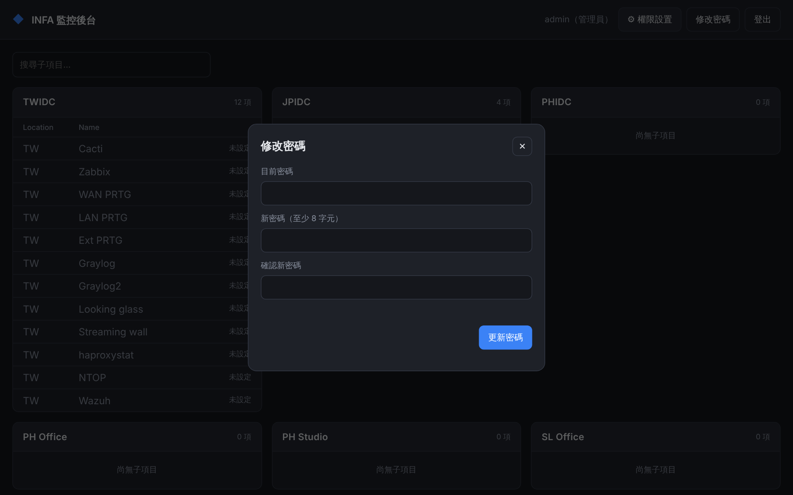
- 欄位：目前密碼、新密碼、確認新密碼。
- 兩次新密碼不一致時在前端擋下。
- 修改成功後，該帳號在其他裝置的登入狀態全部失效。
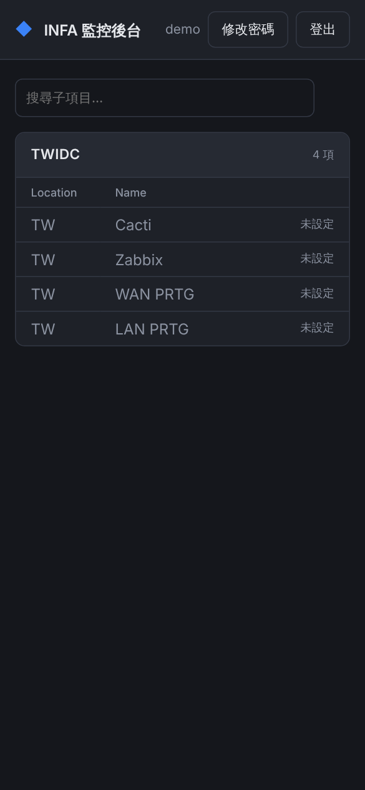
3. 操作流程
開通一個新同事
新增一個區域的子項目
同事忘記密碼
4. 權限規則
以下規則必須在後端強制執行，前端隱藏按鈕只是體驗，不能當作權限控管。
| # | 規則 |
|---|---|
| R1 | 未登入只能呼叫 /api/login、/api/logout，其他 API 回 401。 |
| R2 | GET /api/items：管理員回傳全部；一般使用者只回傳 user.items 內的項目。 |
| R3 | /api/admin/* 僅管理員可呼叫，否則回 403。 |
| R4 | 系統至少保留一位管理員：把最後一位管理員改成一般使用者時回 400。 |
| R5 | 管理員不能刪除自己的帳號。 |
| R6 | 刪除子項目時，從所有帳號的 items 中移除該 ID。 |
| R7 | 設定授權時，不存在的子項目 ID 直接忽略，重複 ID 去重。 |
| R8 | 重設密碼（管理員重設或自己修改）後，該帳號其他 session 全部失效；自己修改時保留目前這個 session。 |
| R9 | 刪除帳號後，該帳號所有 session 立即失效。 |
5. 資料模型
參考實作用單一 JSON 檔（data/db.json）。正式開發可改用任何資料庫，結構建議如下。
users
id string 主鍵
username string 唯一，不分大小寫比對
password string 雜湊值（scrypt / bcrypt / argon2）
role enum 'admin' | 'user'
items string[] 可檢視的子項目 ID
createdAt datetimeitems（子項目）
id string 主鍵
section enum 六個區域之一
location string 可空白，例如 TW
name string 必填，例如 Zabbix
url string 可空白；http(s) 開頭
order int 排序用，新增時遞增若用關聯式資料庫，users.items 建議拆成關聯表 user_items(user_id, item_id)，刪除子項目時以外鍵 ON DELETE CASCADE 處理 R6。
sessions
參考實作存在記憶體，重啟後需重新登入。正式環境可改存 Redis 或資料庫。閒置 8 小時過期，每次請求會延長。
6. API
全部為 JSON。請求必須帶 Content-Type: application/json（否則回 415），錯誤一律回 {"error": "訊息"}，訊息直接顯示給使用者。
| 方法 | 路徑 | 權限 | 請求 | 回應 |
|---|---|---|---|---|
| POST | /api/login | 公開 | {username, password} | {user} + Set-Cookie |
| POST | /api/logout | 公開 | — | {ok:true} |
| GET | /api/me | 登入 | — | {user, sections} |
| GET | /api/items | 登入 | — | {sections, items[]}（依 R2 過濾） |
| POST | /api/me/password | 登入 | {currentPassword, newPassword} | {ok:true} |
| GET | /api/admin/users | 管理員 | — | {users[]}（不含密碼） |
| POST | /api/admin/users | 管理員 | {username, password, role, items[]} | 201 {user}；重複帳號 409 |
| PUT | /api/admin/users/:id | 管理員 | {role?, items?, password?} | {user} |
| DELETE | /api/admin/users/:id | 管理員 | — | {ok:true} |
| POST | /api/admin/items | 管理員 | {section, location, name, url} | 201 {item} |
| PUT | /api/admin/items/:id | 管理員 | {section, location, name, url} | {item} |
| DELETE | /api/admin/items/:id | 管理員 | — | {ok:true} |
user 物件（回傳給前端）
{ "id": "3fd743fa1d92515e", "username": "demo", "role": "user",
"items": ["5d966fbef12c7c65"], "createdAt": "2026-10-21T07:23:52.423Z" }狀態碼
400 欄位錯誤或違反規則 · 401 未登入／帳密錯誤 · 403 權限不足 · 404 找不到 · 409 帳號重複 · 413 請求過大（>1MB）· 415 Content-Type 錯誤 · 429 登入次數過多
7. 欄位驗證
| 欄位 | 規則 | 錯誤訊息 |
|---|---|---|
| 帳號 | 必填，≤ 64 字，僅英數字與 . _ @ -，不分大小寫唯一 | 帳號僅可使用英數字及 . _ @ -／帳號已存在 |
| 密碼 | 8–200 字元 | 密碼至少需 8 個字元 |
| 角色 | admin 或 user，其他值視為 user | — |
| 區域 | 必須是六個區域之一 | 區域不存在 |
| Location | 選填，≤ 100 字 | Location 過長 |
| Name | 必填，≤ 100 字 | Name 不可空白 |
| 網址 | 選填，≤ 2000 字，必須 http:// 或 https:// 開頭（防止 javascript: 連結） | 網址必須以 http:// 或 https:// 開頭 |
所有文字欄位前後空白會被去除。
8. 安全需求
- 密碼只存雜湊（參考實作用 scrypt + 隨機 salt），比對使用 constant-time。帳號不存在時也要做一次雜湊，避免用回應時間猜帳號。
- Session cookie：
HttpOnly、SameSite=Strict，HTTPS 環境加Secure。 - 寫入類 API 要求 JSON Content-Type，加上 SameSite=Strict，用來防 CSRF。
- 登入失敗限制：同一 IP 15 分鐘 10 次。
- 回應標頭：
Content-Security-Policy、X-Frame-Options: DENY、X-Content-Type-Options: nosniff、Referrer-Policy: no-referrer。 - 前端一律用 textContent 輸出使用者資料，不用 innerHTML。
- 首次啟動建立管理員帳號；密碼由環境變數
ADMIN_PASSWORD提供，未提供則隨機產生並印在主控台。 - 正式環境放在反向代理（Nginx）後面並啟用 HTTPS。
9. 視覺規範
深色介面，適合長時間掛在監控螢幕。色彩定義在 public/style.css 開頭。
| Token | 值 | 用途 |
|---|---|---|
--bg | #15171c | 頁面背景、輸入框底色 |
--panel | #1e2128 | 卡片、頂列、對話框 |
--panel-2 | #262a33 | 卡片標題列、次要按鈕 |
--border | #333844 | 邊框、分隔線 |
--text / --muted | #e6e8ec / #8b92a0 | 主要文字／次要文字 |
--accent | #3b82f6 | 主要按鈕、連結、選取狀態 |
--danger / --ok | #ef4444 / #22c55e | 錯誤與刪除／成功提示 |
字體：系統字體（PingFang TC / Microsoft JhengHei），基準 14px。圓角：卡片 10px、按鈕與輸入框 8px、對話框 14px。成功操作在畫面下方顯示 2.5 秒的提示。
10. 待確認事項
- PHIDC、PH Office、PH Studio、SL Office 四個區域的子項目清單。
- 各子項目的登入網址。
- 各子項目點進去的登入畫面（需求方表示後續提供）：是直接連到該系統原本的登入頁，還是要整合單一登入，需要再確認。
- 是否需要操作紀錄（誰在什麼時間新增／修改了帳號或權限）。
- 是否需要串接公司既有帳號系統（AD / LDAP）。